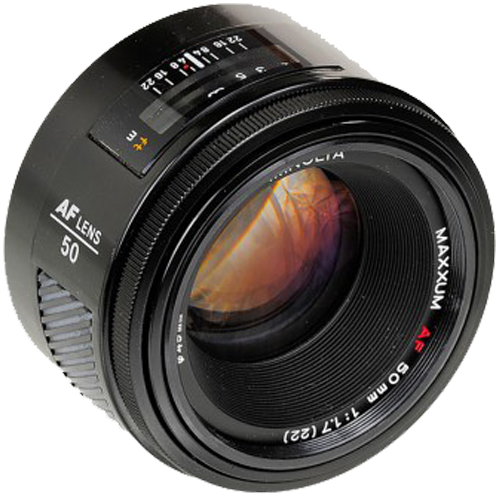
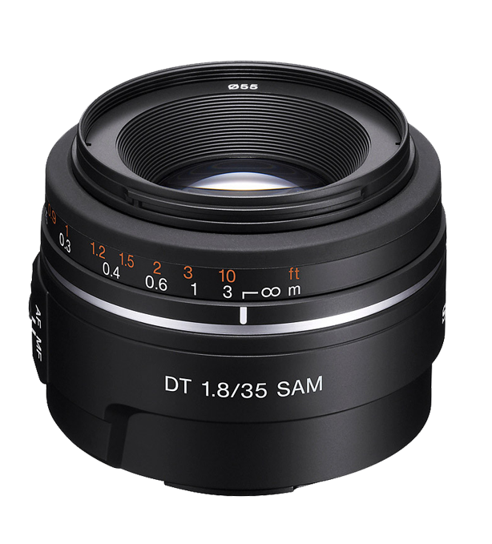
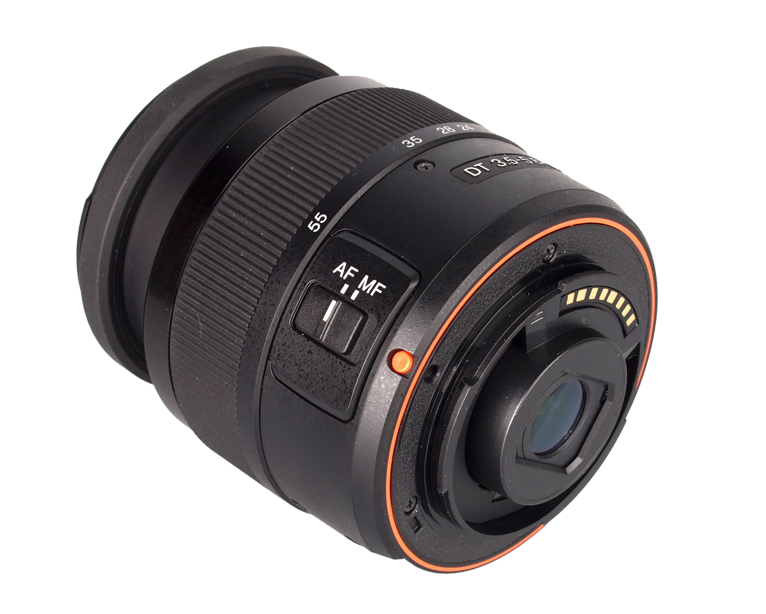

Благодаря матрице Exmor™ APS HD CMOS 20,1 МП и OLED-видоискателю следящий автофокус не упустит движущиеся объекты из вида.
Матрица 20,1 МП Exmor APS HD CMOS Улавливает мельчайшие детали изображения даже при низком уровне освещения.
Процессор изображений BIONZ Мощный процессор значительно снижает искажение изображения.
Система автофокуса обладает функцией быстрого следящего фокуса на движущихся объектах – при съемке фотографий и видео.
Снимает на скорости 8 кадров в секунду Снимает на скорости 8 кадров в секунду.Точность фокусировки обеспечивает 15-точечная система автофокуса с 3 крестообразными датчиками.
Плавное и детализированное видео Full HD благодаря постоянному автофокусу — даже при работе зума.
Объективы
Minolta MAXXUM AF 50 mm F/1.7

Minolta AF 50 F1.7 - обычно применяется в роли портретного объектива. До сих пор используется в цифровых и плёночных зеркальных камерах производства как самой Minolta, так и современной серии Sony a. Один из самых компактных объективов системы Minolta AF. Относительно большая максимальная апертура позволяет фотографировать без вспышки внутри помещений при ISO значениях 100—200.
Sony DT 35 mm f/1.8 SAM

Объектив Sony DT 35 F1.8 SAM (SAL35F18): Светосильный стандартный объектив с широкой диафрагмой также подходит для съемки при недостаточном свете и других съемочных ситуаций. Дизайн объектива DT оптимально подходит для камер с матрицей APS-C: легкий, компактный и удобный в дороге. Плавный привод автофокусировки (SAM) для плавной работы автофокуса.
Sony DT 18-55 mm f/ 3.5-5.6 SAM

Компактный и универсальный зум-объектив Sony DT 18-55mm F3.5-5.6 SAM (SAL1855) широкого применения идеально подходит для ежедневной съемки. Дизайн объектива DT оптимально подходит для камер с матрицей APS-C: легкий, компактный и удобный в дороге. Плавный привод автофокусировки (SAM) для плавной работы автофокуса. Объектив Sony DT 18-55mm f/3.5-5.6 SAM (SAL1855) идеальный выбор для любительской, повседневной съемки. Объектив Sony DT 18-55mm f/3.5-5.6 SAM (SAL1855) покрывает популярный диапазон фокусных расстояний - от широкоугольного до портретного. Новая бесшумная система SONY SAM, обеспечивает точную и быструю скорость фокусировки.